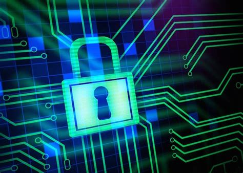

¿Cómo se encripta un mensaje?
Preprocesado del texto simple
Antes de encriptar un mensaje hay que hacer un proceso de adaptación del texto plano. Este proceso tiene varios pasos que permiten que el cifrado resultante sea más resistente frente a ataques por criptoanálisis. Todos los cambios que se hagan sobre el texto se tendrán que tener en cuenta cuando se realice el descifrado para poder obtener el texto plano original. A continuación, se muestran diferentes operaciones que se pueden usar para cifrar un mensaje:
- Conversión del alfabeto. Algunos cifradores usan un alfabeto del texto que no se corresponde con el del mensaje que se quiere cifrar,
por lo que es necesario adaptar el mensaje a ese alfabeto. Por ejemplo:
"Algunos cifradores usan como alfabeto del texto plano el alfabeto latino. Si se desea cifrar un texto en español, es necesario realizar un proceso como resultado del cual no aparezcan los caracteres H, J, Ñ, K, U, W y Y (por ejemplo, podrían sustituirse la U y la W por la V, la K con la Q, la Ñ por la N, la Y por la I, la J por la G, y eliminar la H). Otro ejemplo clásico es el caso de cifradores que no permiten cifrar minúsculas, en cuyo caso será necesario convertir todo en mayúsculas."

Referencia del ejemplo - Preproceso para dificultar el criptoanálisis. Se pueden incluir fragmentos que son para despistar y que no tienen ningún significado. Habitualmente estos fragmentos son caracteres, y se denominan caracteres nulos. También se pueden eliminar caracteres: los espacios en blanco y signos de puntuación suelen eliminarse para conseguir una trasmisión más eficiente y que no se puedan distinguir los límites de las palabras. También se eliminan letras idénticas como RR o LL.
- Usar un código. A veces, antes de cifrar, se utiliza un código que dificulta llegar al significado de ciertas palabras o frases especialmente importantes o habituales.
-
Conversión a números. Hay algunos algoritmo de cifrado como el RSA que necesitan convertir los caracteres en números. Se usan sobre todo sistemas de codificación con
caracteres ASCII o Unicode. Por ejemplo:
El mensaje "Hello World" usando Unicode-8 quedaría así:
48 65 6C 6C 6F 20 57 6F 72 6C 64
Esta cadena de bytes podríamos convertirla en un número concatenándolos:
0x48656C6C6F20576F726C64=87521618088882533792115812

- Números con exponente. Otra opción sería que los caracteres estuviesen ordenados según un criterio e interpretar la cadena como un número con base el número de caracteres del
alfabeto. Por ejemplo, si ordenamos alfabéticamente la siguiente palabra con caracteres solamente en mayúsculas tendríamos:
"HIJO" = 7*26^3 + 8*26^2 + 9*26 + 14 = 128688 Este último caso, sin embargo, puede producir un número demasiado pequeño, por lo que el texto cifrado no sería tan seguro.